Introduction:
Over the past decade shootings have only increased. This has become a
very big issue in the United States, and has had a profound impact on
many individuals and the country as a whole. There are many different
opinions on what a proper solution is, such as banning guns
completelty, investing into more extensive background checks, or
putting more focus on mental health. While a solution is being argued
over, shootings still occur regularly with no change. In this project
I am not seeking a solution, but instead seeking to find valuable
insights and trends regarding what qualities are common among most
active shooters, race, genger, mental health, etc. This data will
assist in finding a solution because it provides valuable information
about what exactly “makes” an active shooter. Knowing this can help
pinpoint which direction a possible solution to this issue should
point.
Sections:
- Introduction
- Data Curation
- Exploratory Data Analysis
- Primary Analysis
- Visualization
- Insights and Conclusion
Data Curation:
We will be using Google Colab for this tutorial. It is provides
use with free acces to computing resources that are well suited for
data science and machine learning. Follow
this
link to learn more about the service if you don't, or to get a feel
for the UI and tools before continuing. Once you've done that create a
new Colab and name it whatever you'd like.
These are all the imports we will be using in this tutorial, add them
to your Colab and run the cell:
! pip install scikit-posthocs
import scikit_posthocs as sp
from sklearn.datasets import load_iris
import pandas as pd
import matplotlib.pyplot as plt
import numpy as np
from scipy.stats import chi2_contingency
from scipy.stats import mannwhitneyu
from scipy.stats import kruskal
import statsmodels.api as sm
from scipy import stats
from sklearn.preprocessing import StandardScaler
from sklearn.model_selection import train_test_split, cross_val_score, StratifiedKFold
from sklearn.preprocessing import StandardScaler
from sklearn.tree import DecisionTreeClassifier
from sklearn.metrics import accuracy_score, classification_report, confusion_matrix
Gathering Data:
First we need to gather data shootings in the United States. This data
needs to contain a decent amount of information about the shooting as
well as the shooter so that we can have more data to work with later
on. I was able to find pretty good data set on Kaggle that contains
data on US shootings for the past 50 years. Follow
this
link to download the data and add it to your Colab. We specifically
only want Dataset Ver 5, so only include that one.
After you've done that we need to run the following in order to create
a dataframe with our csv file:
mass_shootings_5 = pd.read_csv('Mass Shootings Dataset Ver 5.csv', encoding='cp1252')
If you run
mass_shootings_5.head(10) your
data frame should look like this:
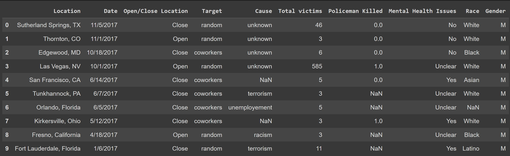
There are many columns that we don't need or want because they don't
have enough entries or because they aren't useful to us. Execute the
following in order to get rid of them:
mass_shootings_5 = mass_shootings_5.drop(columns=['Title', 'S#',
'Incident Area', 'Summary', 'Fatalities', 'Injured', 'Age', 'Employeed
(Y/N)', 'Employed at', 'Latitude', 'Longitude'])
Now we need to edit some of our columns because the data in them isn't
properly formatted. The "location" column includes the city, which we
don't really care for, so we need remove it, and the "target" and
"cause" columns vary too much in their categories so we need to
condense them into more broad categories.
In order to do this I have created the following three functions:
def remove_city(location):
if str(location) != 'nan':
splitted_loc = location.split()
if splitted_loc[-2] in ['New', 'North', 'Rhode', 'South', 'West']:
state = splitted_loc[-2] + ' ' + splitted_loc[-1]
else:
state = splitted_loc[-1]
return state
def fix_target(target):
target = str(target).lower()
if target != 'nan':
if ('ex-' in target):
target = 'Ex-Person(s)'
elif (('teacher' in target) | ('student' in target) | ('teachers' in target) | ('students' in target) | ('school' in target)):
target = 'School'
elif ('child' in target):
target = 'Children'
elif (('congress' in target) | ('police' in target) | ('council' in target) | ('social worker' in target) | ('tsa' in target) | ('marine' in target)):
target = 'Government Employee(s)'
elif (('coworker' in target) | ('friend' in target) | ('neighbor' in target) | ('guest' in target) | ('employee' in target)):
target = 'Relationship (non-familial)'
elif ('family' in target):
target = 'Family'
elif ('random' in target):
target = 'Random'
elif ('women' in target):
target = 'Women'
elif (('black' in target) | ('white' in target) | ('sikhs' in target) | ('monk' in target) | ('pray' in target)):
target = 'Race/Religion'
else:
target = 'Other'
return target
def fix_cause(cause):
cause = str(cause).lower()
if ('frustration' == cause):
cause = 'anger'
elif ('nan' == cause):
cause = 'unknown'
elif (('domestic' in cause) | ('breakup' == cause)):
cause = 'domestic'
elif (('exam' in cause) | ('suspension' == cause)):
cause = 'school'
return cause
Add these functions to your collab and run the following in order to
fix the columns:
mass_shootings_5['Location'] = mass_shootings_5['Location'].apply(remove_city)
mass_shootings_5['Target'] = mass_shootings_5['Target'].apply(fix_target)
mass_shootings_5['Cause'] = mass_shootings_5['Cause'].apply(fix_cause)
There are some more issues with "Location" column that we need to fix.
We've gotten rid of the city, but the state is inconsistent. Sometimes
it is abbreviated, and sometimes it is not. We need this to be
consistent, so we are going to replace the abbreviations.
In order to do this, use the following dictionary:
states = {
'AK': 'Alaska','AL': 'Alabama','AR': 'Arkansas','AZ': 'Arizona','CA': 'California',
'CO': 'Colorado','CT': 'Connecticut','DC': 'District of Columbia','DE': 'Delaware','FL': 'Florida',
'GA': 'Georgia','HI': 'Hawaii','IA': 'Iowa','ID': 'Idaho','IL': 'Illinois',
'IN': 'Indiana','KS': 'Kansas','KY': 'Kentucky','LA': 'Louisiana','MA': 'Massachusetts',
'MD': 'Maryland','ME': 'Maine','MI': 'Michigan','MN': 'Minnesota','MO': 'Missouri',
'MS': 'Mississippi','MT': 'Montana','NC': 'North Carolina','ND': 'North Dakota','NE': 'Nebraska',
'NH': 'New Hampshire','NJ': 'New Jersey','NM': 'New Mexico','NV': 'Nevada','NY': 'New York',
'OH': 'Ohio','OK': 'Oklahoma','OR': 'Oregon','PA': 'Pennsylvania','RI': 'Rhode Island',
'SC': 'South Carolina','SD': 'South Dakota','TN': 'Tennessee','TX': 'Texas','UT': 'Utah',
'VA': 'Virginia','VT': 'Vermont','WA': 'Washington','WI': 'Wisconsin','WV': 'West Virginia',
'WY': 'Wyoming','PR': 'Puerto Rico','VI': 'Virigin Islands', 'D.C.': 'District of Columbia'
}
And run this:
mass_shootings_5['Location'] =
mass_shootings_5['Location'].replace(states)
Now as a final touch we will rename the "Total victims" column:
us_mass_shootings = mass_shootings_5.rename(columns={'Total victims':
'Total Victims'})
Now if you run
mass_shootings_5.head(10) again,
it should look like:
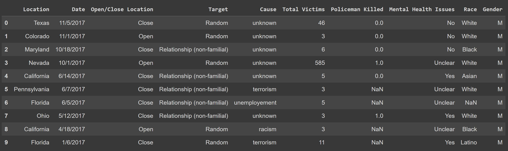
Data Analysis:
In this section we want to learn more about the data. So are there any
correlations, trends, or insights that we can find? With this new
information we can better set up our primary analysis. Since I want to
be able to find relationships between our columns, most of our
analysis here will be trying to see if any of our features correlates
with one another. We will do this through the use of multiple
techniques that will provide some valuable insights.
The Target and Presence of Mental Health Issues
Here we are going to see if there is any correlation between the
target of a shooting, and whether or not the shooter has some kind of
mental health issue. In order to do this we will use chi-squared test.
Chi-Squared test are used to check if two categorical variables come
from the same distribution. This means that we should be able to see
if there is some kind of relationship between the two features. If you
want to learn more about chi-squared question click
here
First lets define our null and alternative hypothesis. The null
hypothesis (H0) is what we are trying to disprove and the
alternative hypothesis (HA) is what we are trying to prove.
-
H0: The mental health of a shooter has an effect on the target of a
mass shooting.
-
HA: The mental health of a shooter does have an effect on the target
of a mass shooting.
In order to effectively use this test we will put our data in a
contingency table. Contingency tables place one variable on one exis,
and another variable on the other. This format allows relationships
between the data to be more identifiable. Click
here to
learn more about contingency tables.
Run this in order to create our table:
new_df = us_mass_shootings[(us_mass_shootings['Mental Health Issues'] == 'Yes') | (us_mass_shootings['Mental Health Issues'] == 'No')]
contingency_table = pd.crosstab(new_df['Target'], new_df['Mental Health Issues'])
If you now display the table with
contingency_table, then it should
look like this:
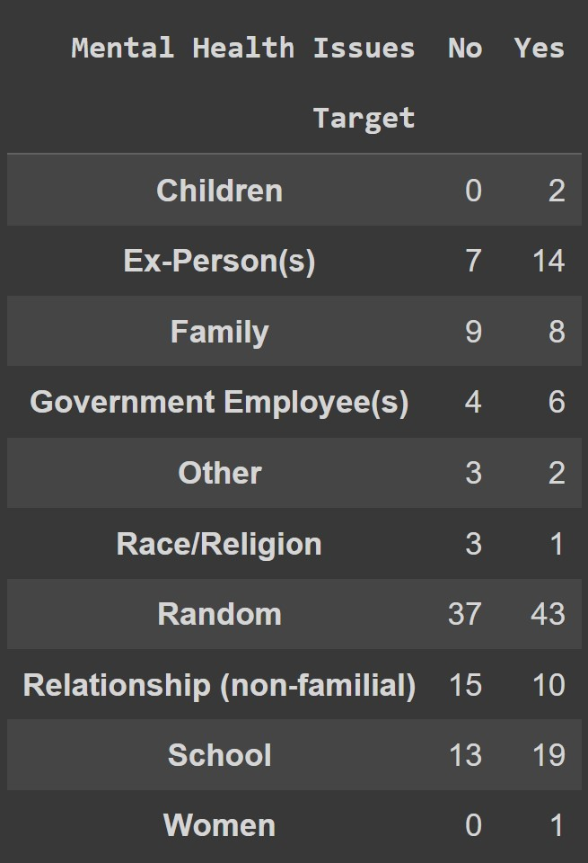
Before we figure out whether or not we can prove there is some
relationship, let's visualize the data with a bar graph. To do this,
use the following code:
plot = contingency_table.plot(kind='bar', title='Relationship Between Target and Mental Health Issues')
plot.set_xlabel("Target of Shooting")
plot.set_ylabel("# of Shootings With/Without Mental Health Issues")
This should display the following graph:

From this graph we can see that certain target such as "Random",
"School", and "Ex-Person(s)" have a much higher number of shootings
that involve mental health issues. While other targets, "Family" and
"Relationship (non-familial)", have a higher rate of shootings that
don't involve mental health issues. Although there is evidence of
higher and lower occurences depending on the target based on this
graph, it is not enough for us to conclude that there is some
relationship. So, we must use the chi-squared test.
To run Chi-Squared test run the following code:
chi2, p_value, dof, ex = chi2_contingency(contingency_table)
Now if you display the p_value by running
p_value, then
0.48715665898535343
will be displayed
What does this value mean? The p value is essential how confident we
are that we can reject the null hypothesis. It's actually more like
the probability that the alternative hypothesis is just a coincidence
or error, but I feel like my previous definition is slightly easier to
understand. We want this value be below .05 (alpha value), which means we are highly confident in rejecting the null
hypothesis. To learn more about p-values click the
here.
Since it isn't below .05 we fail to reject our null hypothesis, so we
can't definitevily say that there is a connection between the two
features based on this. So, there is no direct relation between the
target and if the shooter has mental health issues.
The Location and Number of Injuries
Next we are going to see if there is a relationship between the number
of injuries and whether or not the shooting took place in an open or
closed location. A closed location are places that are usually
indoors, like a mall, or building, and an open location is usually
outdoors, so a beach or parking lot.
In order to do this, we are going to use a Mann-Whitney U test. This
is because the two features are independent from eachother and not
normally distributed. This is once again a good test to use when you
want to compare two features. To learn more about Mann-Whitney U test,
click
here
Once again we are going to define our null and alternative hpothesis:
-
H0: The location being opened or closed has no affect on the amount
of injuries.
-
HA: The location being opened or closed has an affect on the amount
of injuries.
Before doing the test though lets try and visualize the relationship
with the use of a box plot. We'll start by seperating the opened and
closed data:
open_location = us_mass_shootings[us_mass_shootings['Open/Close Location'] == 'Open']['Total Victims']
closed_location =us_mass_shootings[us_mass_shootings['Open/Close Location'] == 'Close']['Total Victims']
We can now create the box plot with the following:
plt.xlabel('Open/Close Location')
plt.ylabel('Total Victims')
plt.title('Boxplot of Total Victims by Open/Close Location')
plt.boxplot([us_mass_shootings[us_mass_shootings['Open/Close Location'] == 'Open']['Total Victims'], us_mass_shootings[us_mass_shootings['Open/Close Location'] == 'Close']['Total Victims']],
labels=['Open', 'Closed'])
plt.show()
This is the box plot we get:

From this we can really see anything because there are some pretty
high outliers which are affecting the distribution of the data, but
can zoom in a little bit so that I can actually see the box plots with
the following:
plt.boxplot([us_mass_shootings[us_mass_shootings['Open/Close Location'] == 'Open']['Total Victims'], us_mass_shootings[us_mass_shootings['Open/Close Location'] == 'Close']['Total Victims']],
labels=['Open', 'Closed'])
plt.xlabel('Open/Close Location')
plt.ylabel('Total Victims')
plt.title('Boxplot of Total Victims by Open/Close Location')
plt.ylim(0,50)
plt.show()
Our plot now looks like this:
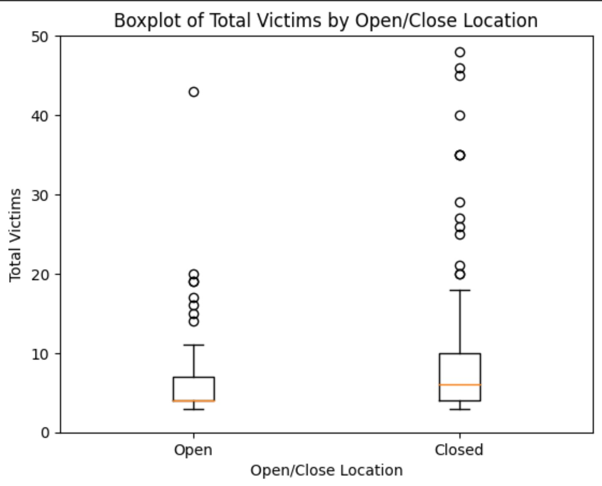
We can see the actual data in the box plots much better now. In the
plots we can see that they both are right skewed, so on average both
open and closed locations are greater than their medians. The open
location box plot is most likely more skewed because it has much
higher outliers than the closed location. The outliers in this dataset
may cause us some problems, so it is something we should look out for
if need be in later sections.
Now lets find our p-value so that we can see if we can reject or fail
to reject our null hypothesis (alpha value is once again .05). To do
this, run the following:
statistic, p_value = mannwhitneyu(open_location, closed_location)
If we display the p-value by running
p_value, we get
0.03603286133592586.
Our p-value is less than the alpha (.05) so we reject the null
hypothesis. This means that there is some relationship between whether
the location is opened or closed and the amount of victims harmed. We
can explore this more in the Machine Learning section, and use this to
help our analysis.
Causes and the Number of Victims
For this analysis we want to compare the causes to the number of
victims in a shooting. We also want to see how those causes compare to
each other in realtion to the number of victims that they have. The
causes are basically the reason why the shooter commited the crime. So
things like "anger", "revenge", "domestic" disputes, etc.
We will do this with the use of an ANOVA test. We use ANOVA test in
order to compare different groups in order to see if there are any
significant differences. To learn more about ANOVA test, click
here.
Before we do our test, lets visualize our data with a bar graph that
compares the average amount of victims in each cause along with the
overall average. First we need to create a dataframe with all of our
averages:
averages = us_mass_shootings.groupby('Cause').agg({'Total Victims': 'mean'}).reset_index()
averages.columns = ['Cause', 'Average Total Victims']
It should look like this:
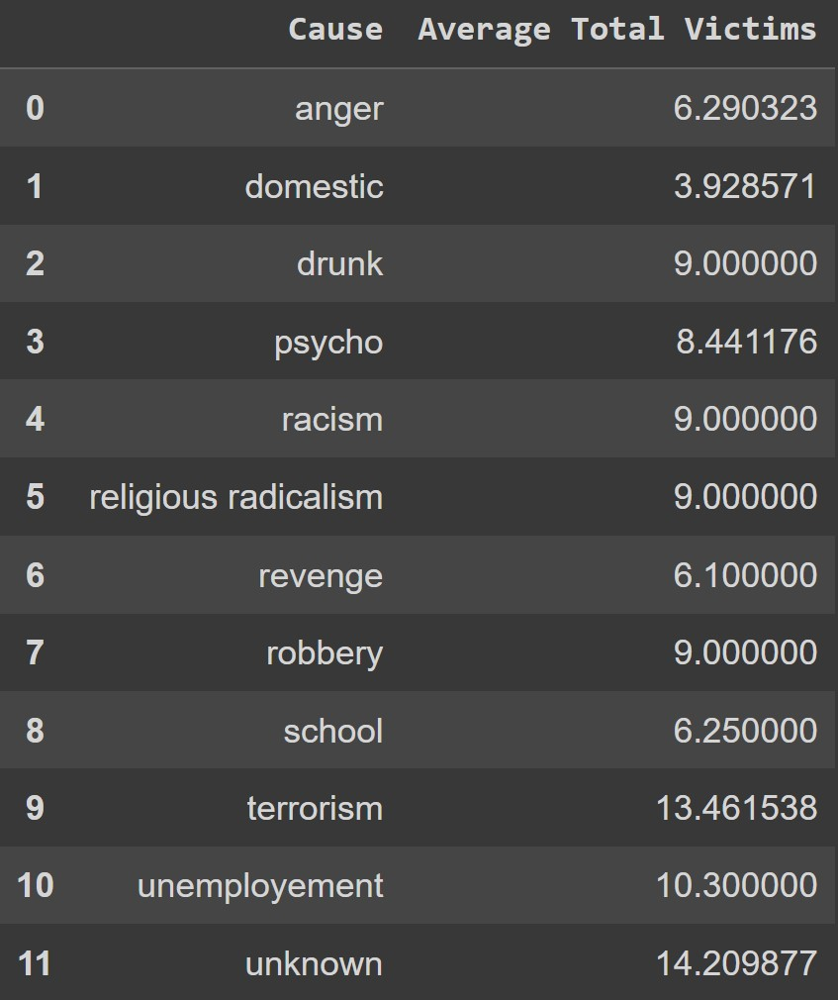
Now we want the overall mean between the categories, we can do that by
runnning this:
causes_mean = averages['Average Total Victims'].mean()
Finally, lets display our create and display our bar graph by running
the following:
plot = averages.plot.bar(x='Cause', y='Average Total Victims')
plt.axhline(y=causes_mean, color='r', linestyle='-')
plt.ylabel('Average Total Victims')
plot
Our plot should look like this:
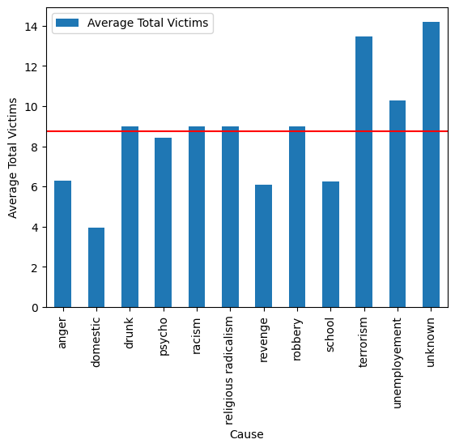
With this bar graph we can see the relationship between the different
causes and how they differ from each other when it comes to the
average amount of victims harmed. There are definetly some causes that
seem to cause much more harm than others, but we should use our ANOVA
test in order to be sure.
For our ANOVA test, we also need to define a null and alternative
hypothesis:
-
H0: The means will be the same accross all groups, so the cause has
no affect on total victims.
-
HA: The means won't be the same accross all groups, so the cause has
an affect on total victims.
Before we do our ANOVA test, we must ensure that all of our groups is
normally distributed, we can check anger by graphing it like so:
dist = us_mass_shootings[us_mass_shootings['Cause'] == 'anger']['Total Victims']
sm.qqplot(dist)
The graph should look like this:
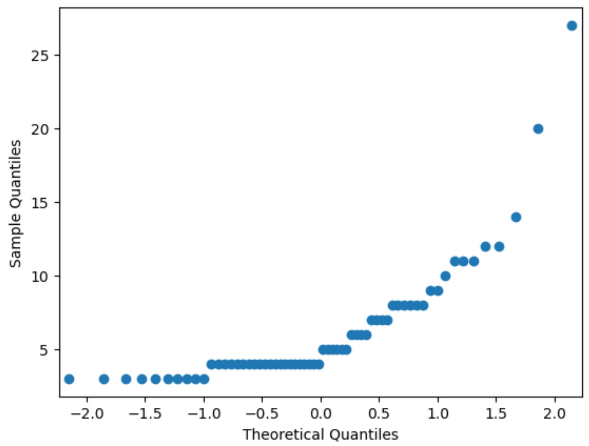
As we can see this isn't normally distributed, so we can't use an
ANOVA test, but we can use something similar called a Kruskal-Wallis
test. It's accomplishes the same, but without the need for normally
distributed data. You can learn more about Kruskal-Wallis test
here.
We can run the test and obtain our p-value by doing the following:
anger = us_mass_shootings[us_mass_shootings['Cause'] == 'anger']['Total Victims']
unemployement = us_mass_shootings[us_mass_shootings['Cause'] == 'unemployement']['Total Victims']
racism = us_mass_shootings[us_mass_shootings['Cause'] == 'racism']['Total Victims']
domestic =us_mass_shootings[us_mass_shootings['Cause'] == 'domestic']['Total Victims']
pyscho = us_mass_shootings[us_mass_shootings['Cause'] == 'psycho']['Total Victims']
revenge = us_mass_shootings[us_mass_shootings['Cause'] == 'revenge']['Total Victims']
school = us_mass_shootings[us_mass_shootings['Cause'] == 'school']['Total Victims']
religious_radicalism = us_mass_shootings[us_mass_shootings['Cause'] == 'religious radicalism']['Total Victims']
drunk = us_mass_shootings[us_mass_shootings['Cause'] == 'drunk']['Total Victims']
robbery = us_mass_shootings[us_mass_shootings['Cause'] == 'robbery']['Total Victims']
unknown = us_mass_shootings[us_mass_shootings['Cause'] == 'unknown']['Total Victims']
terrorism = us_mass_shootings[us_mass_shootings['Cause'] == 'terrorism']['Total Victims']
stat, p_value = kruskal(anger, unemployement, racism, domestic, pyscho, revenge, school, religious_radicalism, drunk, robbery, unknown, terrorism)
If you display the p-value with
p_value, then we get
2.1963291386413655e-05
Our alpha value is still .05, so this is significantly below that,
which means that we can reject our null hypothesis. This means that
there are differences between the causes in relation to the total
number of victims. So some causes like "terrorism" would have a higher
total victim count than "domestic" disputes.
We can confirm the significant differences between the groups with a
post-hoc test. This will basically give us the actual comparison
between groups so we can see just how different they are. If you want
to learn more about post-hoc test, click
here.
The following code will create the results for our post-hoc test:
data = pd.DataFrame({
'anger': anger.dropna(),
'unemployment': unemployement.dropna(),
'racism': racism.dropna(),
'domestic': domestic.dropna(),
'psycho': pyscho.dropna(),
'revenge': revenge.dropna(),
'school': school.dropna(),
'religious_radicalism': religious_radicalism.dropna(),
'drunk': drunk.dropna(),
'robbery': robbery.dropna(),
'unknown': unknown.dropna(),
'terrorism': terrorism.dropna()
})
data = data.apply(lambda x: x.fillna(x.mean()))
data = data.melt(var_name='Cause', value_name='Total Victims').dropna()
results = sp.posthoc_dunn(data, val_col='Total Victims', group_col='Cause', p_adjust='bonferroni')
Now we can display results with
results which would give us a
kind of matrix with the p-values of each comparison. Instead of just
displaying that we will make it slightly easier to understand by
replacing the p-values with True and False. True if the p-value is
greater than .05, meaning that there is a significant difference, and
false if otherwise, meaning there isn't a significant difference.
Doing this is simple, just run the following:
resultsTF = results < .05
If you display the new dataframe with
resultsTF, then your output
should look something like this:
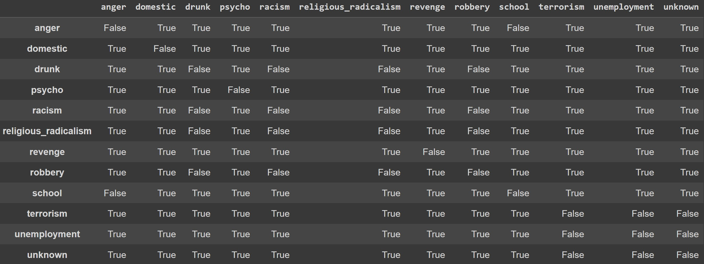
From this you can see that a lot of our data has a significant
difference between features. This means that there is a meaningful
distinciton between the cause and the amount of victims for a lot of
our categories. This means that the cause does cause some difference
in the amount of victims resulting from the shooting, and here we can
see which causes actually have that difference.
Analysis Conclusion
After this analysis we can see that a lot of our data is categorical,
and we were able to point out some relationships between those
categories. From our final analysis we can seethat the cause does have
an effect on the number of total victims. We were also able to gather
from out second analysis that the location being open or closed had an
effect on the number of victims, with open locations having slightly
more. In thenext section we will use these insights in order to
determine what kind of machine learning analysis and function we will
use.
Machine Learning:
Since we have collected, cleaned, and gained insights from our data,
we will now develop a Machine Learning model that shows how some of
our features contribute to how deadly a shooting can be. This will
enable us to figure out what features are correlated higher victim
totals. To do this we will use some machine learning techniques.
Creating our Model
In the previous section we were able to see that the Total Victims
feature can be affected by the cause and whether or not the location
is opened or closed. So we will mostly focus on that in this section.
This means that our independent variables will be our other features,
not Total Victims, and the dependent variable will be the Total
Victims.
First we have to decide what Machine Learning. Since we want to
predict a real valued continous feature, we should select some kind of
regression model. I think that a Decision Tree would be our best bet
because of the nature of our data, and what we want to do with it.
Given some categorical data we want to make a decision/estimate about
how many possible Victims could be in a shooting. A decision tree
seems best to accomplish this goal. To learn more about decision
trees, click
here.
First we need to split out data, and handle outliers. To do that we're
just going to exclude them:
data = us_mass_shootings.drop(columns=['Location', 'Date','Gender', 'Race', 'Target'], axis = 1)
# Z-score for each value in the column
z_scores = stats.zscore(data['Total Victims'])
# threshold for the Z-score
threshold = 2
# Filter rows
data = data[abs(z_scores) < threshold].dropna()
data_x = data.drop('Total Victims', axis=1)
data_y = data['Total Victims']
Now we are going to encode our data as well as create our training and
testing data. We need to encode the data because all of our other
features are categorical. We won't be able to properly train our
models with those, so we need to encode them. To learn more about what
exactly encoding is, click
here.
data_x_encoded = pd.get_dummies(data_x, drop_first=True)
X_train, X_test, y_train, y_test = train_test_split(data_x_encoded, data_y, test_size=0.3, random_state=42)
Next we'll define our model, and perform
k-fold validation
to help evaluate our the model.
model = DecisionTreeClassifier()
k_folds = 5
skf = StratifiedKFold(n_splits=k_folds, shuffle=True, random_state=42)
score = cross_val_score(model, X_train, np.ravel(y_train), cv=skf)
print("Decision Tree: " + str(score.mean()) + " ( +/- " + str(score.std()) + ")")
Based on our output, we can see that our performance isn't very good,
.23500000000000001, lets try some other models to see if
they do any better:
models = {'KNN': KNeighborsClassifier(),
'DecisionTree': DecisionTreeClassifier(),
'LogisticRegression': LogisticRegression(max_iter=1000),
'RandomForest': RandomForestClassifier()}
k_folds = 5
skf = StratifiedKFold(n_splits=k_folds, shuffle=True, random_state=42)
for model_name, model in models.items():
score = cross_val_score(model, X_train, np.ravel(y_train), cv=skf)
print(model_name + ": " + str(score.mean()) + " ( +/- " + str(score.std()) + ")")
The output of these other models are even worse, so lets stick with
the decision tree and see if we can improve its performance.
Training our Model
Now we have to use our training and test data in order to train and
evaluate our model. In order evaulate our model we will take a look at
its
classification report.
# Train Model
model.fit(std_X_train, np.ravel(y_train))
# Evaluate performance
y_pred = model.predict(std_X_test)
accuracy = accuracy_score(y_pred, y_test)
print("Accuracy of "+model_name+": "+str(accuracy))
print('Classification Report: ')
print(classification_report(y_test, y_pred, zero_division=1))
This is our output:
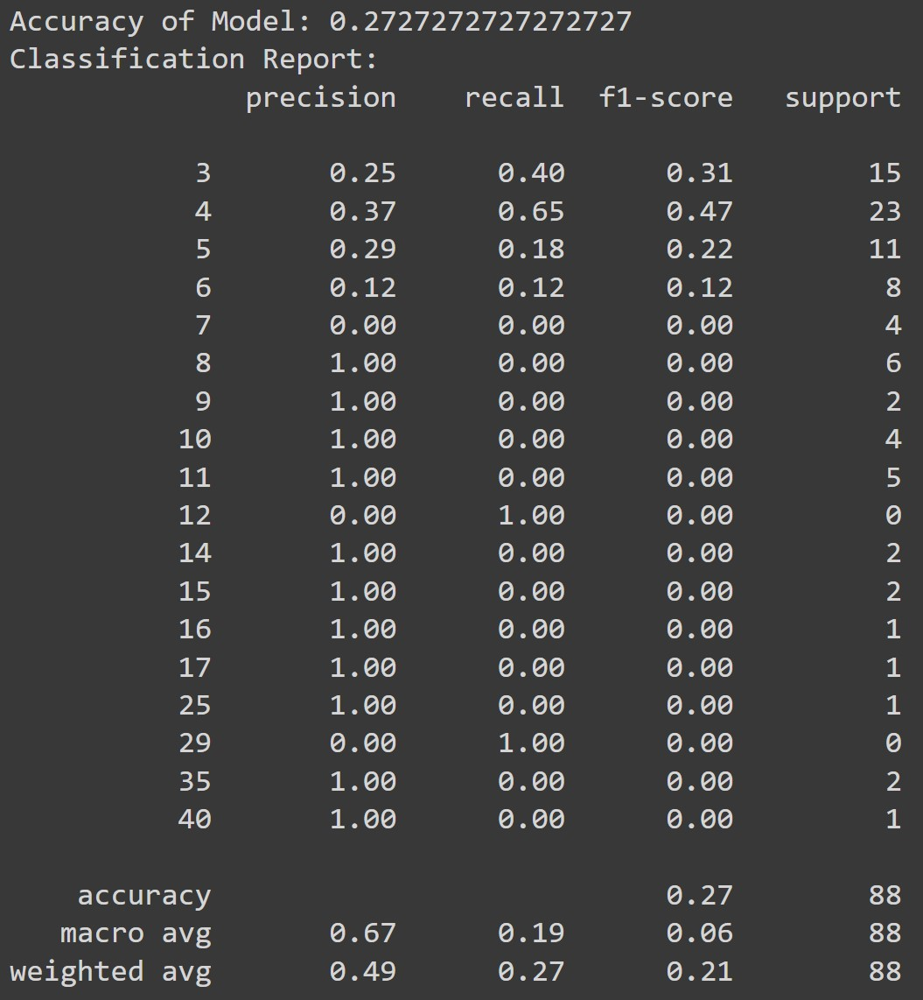
From this we can see that our model isn't the greatest, but it is very
precise. Especially when it comes to higher Victim Counts.
Fine Tuning Our Model
Since our models performance wasn't very good, lets try to improve it
via fine tuning. The following code should help fine tune our decision
tree and improve performance:
for criterion in ['gini', 'entropy']:
for max_depth in [2,3,4,5,6]:
for min_samples_leaf in [5, 10, 20, 30]:
model = DecisionTreeClassifier(max_depth=max_depth, criterion=criterion, min_samples_leaf=min_samples_leaf)
model.fit(X_train, y_train)
test_predictions = model.predict(X_test)
test_acc = accuracy_score(y_test, test_predictions)
if test_acc > best_acc:
best_acc = test_acc
print(best_acc)
Out performance still isn't great,
0.29545454545454547 but is better than it was before, so
we'll stick with it for now.
Lets take a look at our classifcation report again to see if anything
else improved:
y_pred = model.predict(X_test)
accuracy = accuracy_score(y_pred, y_test)
print("Accuracy of Model: "+str(accuracy))
print('Classification Report: ')
print(classification_report(y_test, y_pred, zero_division=1))
Output:
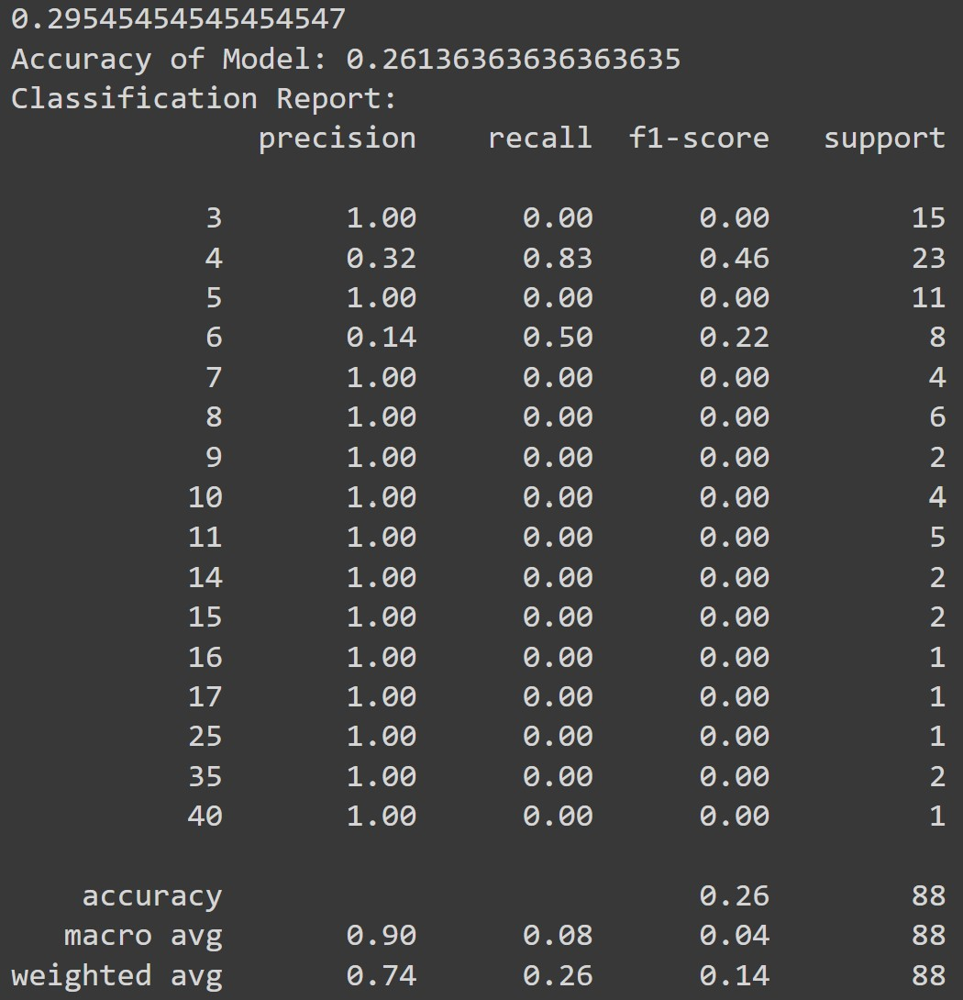
As you can see it's mostly the same, but our precision did improve a
decent amount. The higher precision levels, especially with some
larger Victim Totals could be attributed to those kinds of shootings
being more rare, making them easier to predict that the more average
victim totals.
Visualization
Lets plot our decision tree to see what it looks like. This is one of
the benefits of a decision tree, it is fairly simple to look at and
understand since it works in a similar(ish) way to the human brain.
Looking at a Decision Tree can help us understand what the "thought"
process is like for the model.
The following code will display the model:
fig = plt.figure(figsize=((25,20)))
plot_tree(model,
feature_names = data_x_encoded.columns,
impurity=False,
proportion=True,
filled=True)
Output:
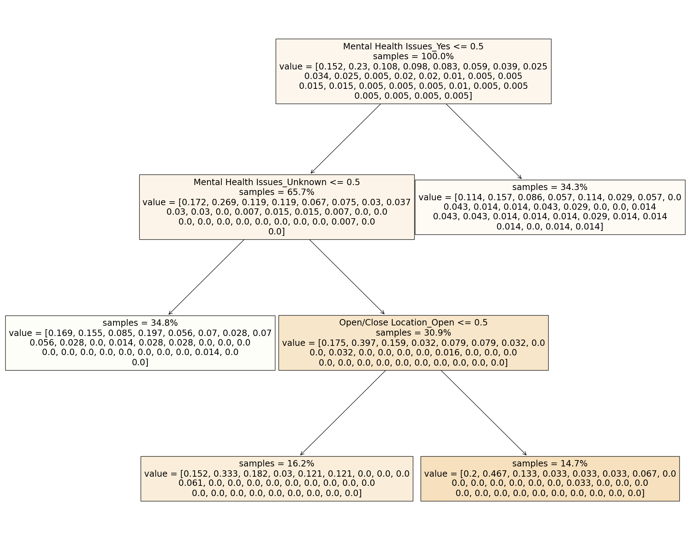
This visualization provides some insights into how the tree makes its
decisions. We can see here how it decided to split the features. Which
is very important when building a decision tree. This is very
important because the split depends on the level of entropy resulting
from it. Based off of the first split with Mental Health issues, we
can tell that the tree is pretty confident in classifying the total
victims based on just that category. When it comes to unknown mental
health issues the tree seems to need to also check the open/close
location feature before making a decision.
This transparency that comes with decision trees is very valuable
since it has alowed us to gain some more insights into the decision
mkaing/classification proccess.
Conclusion
Although we weren't able to pinpoint a solution as much as I hoped,
there were some valuable insights that I believe we about shootings:
-
We were able to indentify a relationship between whether the
location is opened or closed and the amount of victims harmed.
-
We were able to indentify a meaningful distinciton between the cause
and the amount of victims for a lot of our categories.
With these insights we developed were able to Machine Learning Model,
which although not working very well, was able to still give some
valuable experience and information about that step in the data
science proccess.
We are still a long road away from a solid solution to this issue that
plagues the US, but through the use of more data science techniques
and tools, a possible solution could be found much quicker.